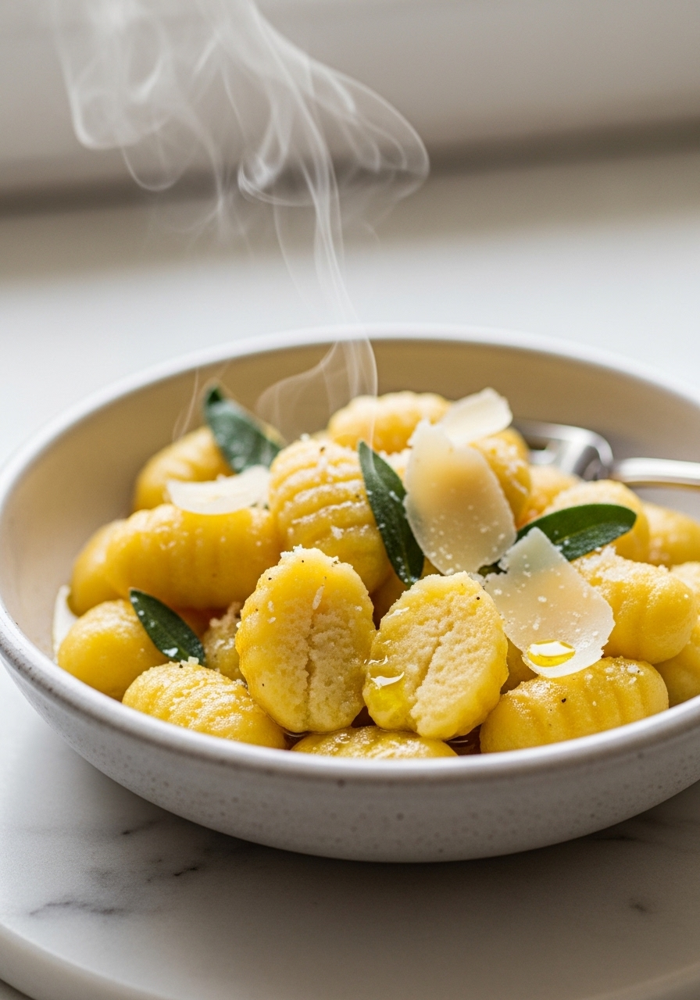
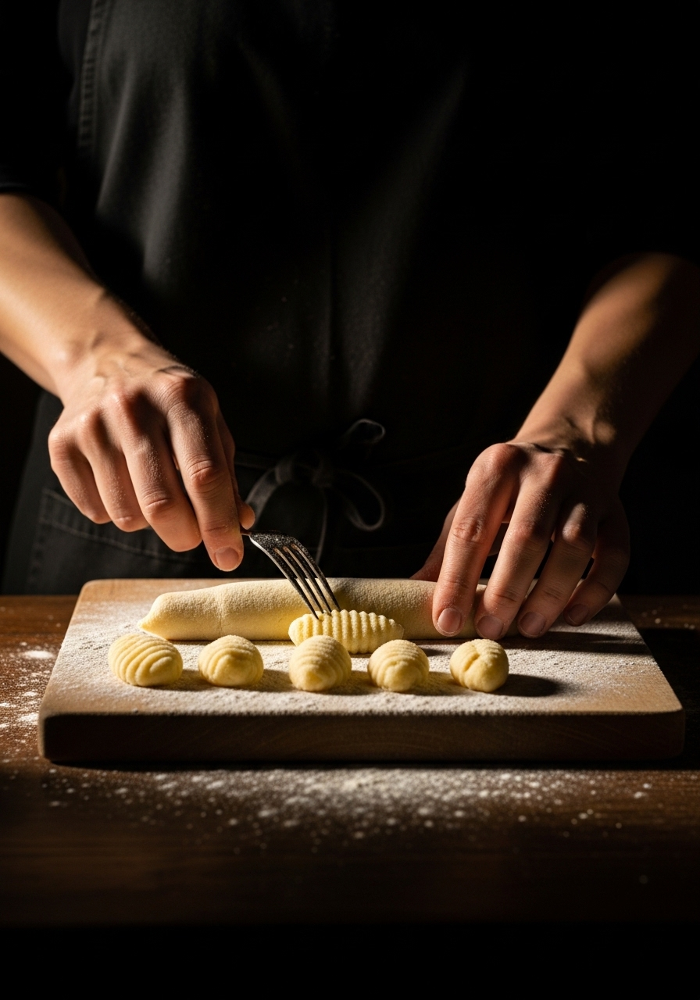

Gli gnocchi di patate fatti in casa sono una delle cose più soddisfacenti che puoi preparare da zero — e una delle più fraintese. La differenza tra gnocchi pesanti e densi e gnocchi leggeri e soffici dipende da tre cose: la giusta patata, il giusto rapporto di farina e la mano più leggera possibile nel lavorare l'impasto.

Dal Gusto UnicoLa maggior parte delle ricette di gnocchi dice di bollire le patate. È un errore che le nonne italiane non farebbero mai. La bollitura introduce acqua nella patata, che poi devi compensare con più farina — rendendo gli gnocchi densi e gommosi. La cottura al forno asciuga la patata dall'interno, dandoti una polpa amidacea e soffice che richiede la minima quantità di farina per legarsi. Meno farina aggiungi, più leggeri saranno gli gnocchi finali.
Il burro nocciola e salvia (burro e salvia) è il classico e il migliore — il burro noisette e la salvia profumata lasciano brillare gli gnocchi di patate. La salsa al gorgonzola cremosa riveste magnificamente e aggiunge ricchezza. Il semplice pomodoro e basilico è sempre giusto. Il pesto genovese è un abbinamento tradizionale. Evita sughi di carne molto corposi e pesanti — i delicati gnocchi non reggono il confronto. Il condimento deve rivestire e complementare, non sopraffare.
Ingredienti
Procedimento

Gli gnocchi crudi si congelano magnificamente. Disponili su un vassoio infarinato e congela finché sono sodi (1 ora), poi trasferiscili nei sacchetti da freezer. Cuocili direttamente dal congelato in acqua salata in ebollizione — impiegano circa 1 minuto in più. Gli gnocchi cotti non si conservano bene — diventano appiccicosi e molli. Prepara e cuoci sempre gli gnocchi lo stesso giorno, oppure congelali crudi.
Quasi sempre causato da troppa umidità nella patata (dalla bollitura) o troppa farina. Cuoci le patate al forno, aggiungi la minor quantità di farina possibile, e lavora l'impasto con una mano leggerissima. Lavorare troppo sviluppa il glutine, che rende gli gnocchi duri.
Patate farinose e amidacee: a pasta bianca, Russet o King Edward. Evita le patate cerose — non si schiacciano bene e producono gnocchi collosi.
Sì — i tradizionali gnocchi veneti non hanno uovo. Sono leggermente più delicati e fragili, ma leggeri e deliziosi. Ometti il tuorlo e aggiungi la minima farina necessaria.
Salgono in superficie quando sono cotti. Aspetta che salgano, poi dagli altri 30 secondi prima di rimuoverli con una schiumarola. Non bollirli per un tempo prestabilito — il galleggiamento è l'unico indicatore affidabile.
Le righe sono facoltative ma servono a uno scopo: trattengono meglio la salsa rispetto agli gnocchi lisci. Rotola ogni pezzo sul dorso di una forchetta o su un riga-gnocchi. Vale i 5 minuti extra per preparazioni con salsa abbondante.